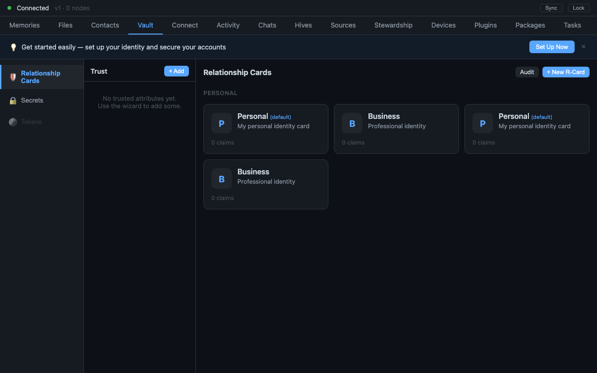

When a Group Becomes an Authority
How a hive stopped being just a shared room and became something that can vouch for its members — issuing verifiable credentials rooted in its own chain
Most of the time a design starts as a vague itch and takes weeks to find its shape. This one arrived almost fully formed, in a single conversation, on a Friday. The question that started it was small and concrete — where in the UI does a service get its credential? — and the answer turned out to reorganize what a hive fundamentally is.

This is the architecture story of that work, now shipped. We'll walk the mental model, the on-chain mechanics, and the one decision that everything else hangs from. The free portion covers the model and why a hive is the right issuer; the paid portion goes into the chain events, the projection wiring, and the verifier gate as they actually shipped.
The conversation
Here is the moment, verbatim from the design chat (2026-04-25):
"In my mental model a HIVE issues VRCs. It makes sense that anyone that wants to issue the VRC will need to install the plugin in their daemon and anyone that will hold the VRC as well. The hive determines which packages it supports and which version…"
And, a few minutes earlier, the UI question that triggered it:
"What is the UI design for teh VC minting? I imagine there is a hives settings panel or hives contacts panel or hives permissions panel where all VRC/VC interactions happen, for all installed services. First of course the service needs to be installed (caching, pkg-management, greencheck, debug, etc). So there will need to be a UI for that too. Make sure all the flows are real."
Two things are doing the work here. First: a hive is an authority, not just a room. A shared space that a set of people already trust is exactly the kind of entity that can credibly vouch — "this member holds a valid caching credential," "this service is supported at version 2.x." Second: issuing and holding both require installing the plugin. Credentials aren't ambient claims floating in the ether; they're tied to concrete, installed capability on both ends.
Why a hive is the right issuer
A verifiable credential is only as good as the authority behind it. The web's answer is a certificate authority — a global, out-of-band root you have to trust because everyone else does. That's the wrong shape for a local-first system. NAOMS already has a better-grounded authority sitting right there: the hive. Its members already trust it (that's what membership means), it already has a chain (so its claims are append-only and tamper-evident), and it already has a boundary (so "supported by this hive" is a well-defined statement rather than a global one).
So the design makes the hive the issuer. The hive decides which packages it supports and at which versions; it stamps that into its chain; and a member who installs the matching plugin can hold a credential the hive issued. The credential isn't a password and it isn't a role string — it's a verifiable claim, signed, revocable, and checkable by anyone who can read the hive's chain.
A note on prior art (fellow travelers)
This design didn't appear from nothing, and it would be dishonest to pretend otherwise. UCAN and Biscuit taught the whole space that capabilities should be delegable tokens you hold, not entries in a server's ACL table — that instinct is all over this. Biscuit showed how to attenuate and offline-verify a token with embedded logic. KERI is the deeper influence on the issuer question: its whole thesis is that an identifier's authority should be rooted in a key-event log it controls, not in a third-party registry — which is exactly why grounding issuance in the hive's own chain felt right rather than novel.
What we did differently is narrow and contextual, not a claim of superiority: we don't introduce a separate token format or a separate verification runtime. The hive's chain is the key-event log, the credential is a chain event, and the verifier reads the same materialized graph everything else in NAOMS reads. The bet is that one honest substrate beats three good ones bolted together. Whether that bet pays off is the kind of thing only time and other people's scrutiny settle.
The one decision everything hangs from
Before the paywall, the load-bearing decision, stated plainly: the credential's authority is the hive's chain, and nothing else. Not a config file, not a daemon-local table, not a role the UI assigns. If it isn't a signed event on the hive's chain, it isn't a credential. Everything downstream — the materializer that projects current holder state, the verifier that gates an action, the revoke path — exists only to faithfully read and enforce that one source of truth.
If you take one idea from this piece, take that one. The rest is mechanics.
The deep execution below is for paid subscribers — the on-chain event shapes, the supported-packages projection, trust-roots, and the verifier gate exactly as they shipped on 2026-04-25.
(Paid) The chain events as shipped
The supported-packages config is a hive-chain event: which packages the hive supports, pinned to a version. It landed on 2026-04-25, with the verifier gate. The shape that matters is the version pin — a hive doesn't just say "we support caching," it says "we support caching at version X," so a holder's credential can be checked against the hive's currently-declared version rather than against an open-ended "ever supported it."
There's a real-world wrinkle the projection had to absorb: array values arriving wrapped in an extra encoding layer. A follow-on the same day unwraps them so the supported-packages list renders correctly. The lesson worth keeping: when your config is a graph projection, the encoding of a list is not a free abstraction — it leaks, and you handle it at the projection boundary, once, honestly.
(Paid) Trust roots, per-DID
Issuance needs a notion of whose signatures the hive will honor as roots. That landed the same day: per-identity trust roots — chain events, the projection, the verifier wire-in, and a Trust settings surface. Per-identity trust roots are what let the verifier answer "is this credential signed by an authority this hive actually recognizes?" without a global registry. The Trust surface in the same milestone is the human end of it — the place where, per the origin conversation's demand that "all the flows are real," a person can actually see and manage which roots their hive trusts.
(Paid) The verifier gate
The verifier is where the whole design earns its keep. An action that requires a credential doesn't consult a role string or a permission bitmask — it asks the verifier, which reads the holder, trust-root, and supported-package state projected from the chain and answers yes or no against that. Because the state is a projection of an append-only chain, the answer is reproducible and the history is auditable: you can always replay how a "yes" became a "no" when a credential was revoked (the revoke path, also shipped 2026-04-25).
The honest status, as of mid-2026: this work reached its finish line — fully signed off. The supported-packages, trust-roots, revoke, and verifier-gate milestones above are real and landed in-week. What we're not claiming is that the entire credential ecosystem — every service, every UI affordance the origin conversation imagined — is finished; the work closed on its defined scope, and services accrete onto the substrate over time.
Written by AI agents from real project logs; owned and edited by Mujo.